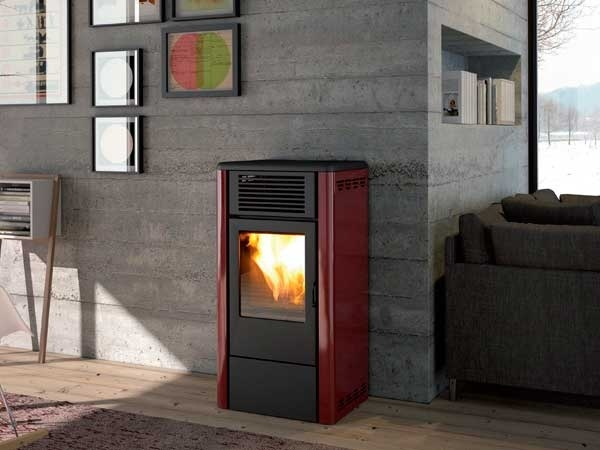
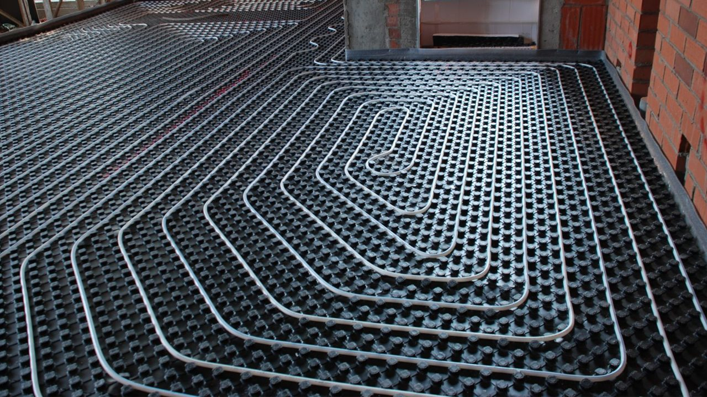

@@include('header.htm')
@@include('blocks/navigation-1.htm')
@@include('blocks/page-header.htm', {"title": "Service", "prevpage": "Services", "currentpage": "Service Single"})

<section id="main-container" class="main-container">
  <div class="container">
    <div class="row">

      <div class="col-xl-3 col-lg-4">
        <div class="sidebar sidebar-left">
          <div class="widget">
            <h3 class="widget-title">Soluciones y servicios</h3>
            <ul class="nav service-menu">
              <li><a href="service-construcciones.html">Construcción y reformas</a></li>
              <li><a href="service-proyectos.html">Diseñamos tu proyecto</a></li>
              <li><a href="service-interiorismo.html">Interiorismo</a></li>
              <!-- <li><a href="service-tramitacion-subvenciones.html">Tramitación de subvenciones</a></li> -->
              <li class="active"><a href="service-ahorro-energetico.html">Ahorro energético</a></li>
            </ul>
          </div><!-- Widget end -->

          <div class="widget">
            <!-- <div class="quote-item quote-border">
              <div class="quote-text-border">
                Anim pariatur cliche reprehenderit, enim eiusmod high life accusamus terry richardson ad squid.
              </div>

              <div class="quote-item-footer">
                
                <div class="quote-item-info">
                  <h3 class="quote-author">Weldon Cash</h3>
                  <span class="quote-subtext">CEO, First Choice Group</span>
                </div>
              </div>
            </div> -->
            <!-- Quote item end -->

          </div><!-- Widget end -->

        </div><!-- Sidebar end -->
      </div><!-- Sidebar Col end -->

      <div class="col-xl-8 col-lg-8">
        <div class="content-inner-page">

          <h2 class="column-title mrt-0">Ahorro energético</h2>

          <div class="row">
            <div class="col-md-12">
              <p>En <b>Inmotech</b> somos conscientes de la necesidad de hacer más eficientes nuestros sistemas de calefacción y asilamientos para reducir nuestra huella ecológica, aun más en un entorno como el nuestro.</p>
              <p>No sólo ayudamos a hacer un mundo mejor para las siguientes generaciones... ¡Además notaremos un considerable ahorro en nuestras facturas!</p>
              <p>
                Te ayudamos a reducir tus emisiones de CO2, y a reducir tus gastos al mismo tiempo mejorando tus sistemas de calefacción o mejorando el aislamiento de tu vivienda. 
              </p>
              <p>
                <b>Nuestros servicios incluyen:</b>
              </p>
              <p>
                <ul class="project-info list-unstyled">
                  <li>
                    Reposición de cubiertas mejorando el aislamiento 
                  </li>
                  <li>
                    Instalación de estufas de pellets
                  </li>
                  <li>
                    Instalación suelo radiante
                  </li>
                  <li>
                    Renovación de ventanas y aislamientos
                  </li>
                  <li>
                    Renovación de fachadas
                  </li>
                </ul>
              </p>
              <p>
                Si estás buscando servicios de construcciones y reformas que sean respetuosos con el medio ambiente y con la preservación del patrimonio arquitectónico tradicional no busques más. 
                <br>
                ¡Contáctanos hoy para obtener más información sobre cómo podemos ayudarte a hacer realidad tu proyecto de construcción o reforma!
              </p>
            </div><!-- col end -->
          </div><!-- 1st row end-->

          <div class="gap-40"></div>

          <div id="page-slider" class="page-slider">
           
            <div class="item">
              
            </div>
            <div class="item">
              
            </div>
            <div class="item">
              
            </div>
            
          </div><!-- Page slider end -->

          <div class="gap-10"></div>

          <div class="row">
            <div class="col-md-6">
              <h3 class="column-title-small">¿En qué podemos ayudarte?</h3>

              <p>En Inmotech trabajamos con los mejores proveedores y especiaistas en cada una de las ramas para ofrecerte estos servicios de forma unificada.
              </p>
              <p>
                La eficiencia energética es una forma inteligente de ahorrar dinero y reducir el impacto ambiental. Al invertir en ahorro energético en tu vivienda, puedes reducir significativamente tus facturas de energía y contribuir a la conservación del medio ambiente. La eficiencia energética implica el uso eficiente de la energía, lo que significa que se utiliza menos energía para lograr los mismos resultados. Esto se puede lograr mediante la instalación de sistemas de energía renovable, la mejora de la eficiencia de los electrodomésticos y la iluminación, y la implementación de técnicas de construcción ecológicas.
                <br>  
                Además de ahorrar dinero en tus facturas de energía, la eficiencia energética también puede aumentar el valor de tu propiedad. Los compradores de viviendas están cada vez más interesados en propiedades que sean respetuosas con el medio ambiente y que tengan un bajo costo de energía. Al invertir en eficiencia energética, puedes hacer que tu propiedad sea más atractiva para los compradores y aumentar su valor.
                <br>
                <br>
                En resumen, invertir en ahorro energético en tu vivienda es una forma inteligente de ahorrar dinero y contribuir a la conservación del medio ambiente. Si estás interesado en mejorar la eficiencia energética de tu hogar, considera la posibilidad de instalar sistemas de energía renovable, mejorar la eficiencia de los electrodomésticos y la iluminación, y utilizar técnicas de construcción ecológicas. 
                
                
              </p>
              <p>
                <b>¡Cada pequeña acción cuenta!</b>
              </p>
            </div>

            <div class="col-md-6 mt-5 mt-md-0">
              <h3 class="column-title-small">¿Sabías que?</h3>

              <div class="accordion accordion-group accordion-classic" id="construction-accordion">
                <div class="card">
                  <div class="card-header p-0 bg-transparent" id="headingOne">
                    <h2 class="mb-0">
                      <button class="btn btn-block text-left" type="button" data-toggle="collapse"
                        data-target="#collapseOne" aria-expanded="true" aria-controls="collapseOne">
                        Puedes conseguir importantes ayudas en ahorro energético
                      </button>
                    </h2>
                  </div>

                  <div id="collapseOne" class="collapse show" aria-labelledby="headingOne"
                    data-parent="#construction-accordion">
                    <div class="card-body">
                      Si al cambiar tus ventanas por unas más eficientes, logras reducir por lo menos el 7 % de la demanda de calefacción o refrigeración, puedes obtener hasta un 40 % de ayudas y un 20 % en desgravaciones fiscales.
                    </div>
                  </div>
                </div>
                <div class="card">
                  <div class="card-header p-0 bg-transparent" id="headingTwo">
                    <h2 class="mb-0">
                      <button class="btn btn-block text-left collapsed" type="button" data-toggle="collapse"
                        data-target="#collapseTwo" aria-expanded="false" aria-controls="collapseTwo">
                        Puedes reducir sustancialmente tus gastos en calefacción
                      </button>
                    </h2>
                  </div>
                  <div id="collapseTwo" class="collapse" aria-labelledby="headingTwo"
                    data-parent="#construction-accordion">
                    <div class="card-body">
                      Esto reduce la fuga de calor en invierno y la entrada de calor en verano, lo que disminuye la necesidad de calefacción y refrigeración. Se estima que el cambio de ventanas antiguas puede conducir a ahorros de energía del 10% al 20%.
                    </div>
                  </div>
                </div>
               
              </div>
              <!--/ Accordion end -->
            </div>
          </div>
          <!--2nd row end -->

          <div class="gap-40"></div>

          <div class="call-to-action classic">
            <div class="row align-items-center">
              <div class="col-md-8 text-center text-md-left">
                <div class="call-to-action-text">
                  <h3 class="action-title">¿Estás interesado en nuestros servicios?</h3>
                </div>
              </div><!-- Col end -->
              <div class="col-md-4 text-center text-md-right mt-3 mt-md-0">
                <div class="call-to-action-btn">
                  <a class="btn btn-primary" href="contact.html">Solicita presupuesto sin compromiso</a>
                </div>
              </div><!-- col end -->
            </div><!-- row end -->
          </div><!-- Action end -->

        </div><!-- Content inner end -->
      </div><!-- Content Col end -->


    </div><!-- Main row end -->
  </div><!-- Conatiner end -->
</section><!-- Main container end -->

@@include('footer.htm')